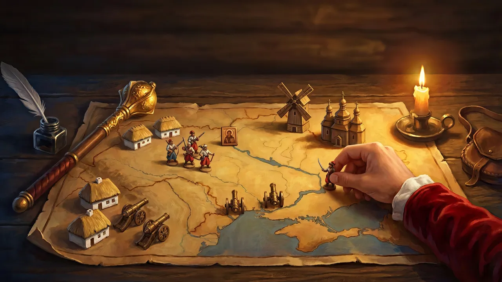

Держава Козаків
Україна, 1648 рік. Козаки й селяни повстають проти Корони, а ти – сотник, якому гетьман довірив людей. Збудуй своє місто, збери військо й звільни рідний край.
Трейлер


Особливості
-
«Шаблями держави не збудуєш»
Кожен житель при ділі: рубає ліс, меле борошно, варить мед. А як людям зле – кидають роботу й бунтують.
-
«На нас напали!»
Не чекай, поки загін розбереться: візьми будь‑якого воїна на себе й веди його сам.
-
«Короля нема, а шляхта є»
Десять місій за справжніми подіями 1648 року, і перед кожною – лист гетьмана.
-
«Без крові»
Кобзар бере ворожу будівлю словом – без жодного пострілу.
-
«Жодна фортеця не спитає козака, куди пливе його чайка»
Чайки бʼють бортовим залпом з річки й висаджують козаків під самі мури.
-
«Хай щастить, пане сотнику!»
Вільна гра проти міст‑суперників – або з друзями по Wi‑Fi, телефони й ПК в одній грі.
-
«Наші діти вчитимуться читати»
Гра українською й англійською.